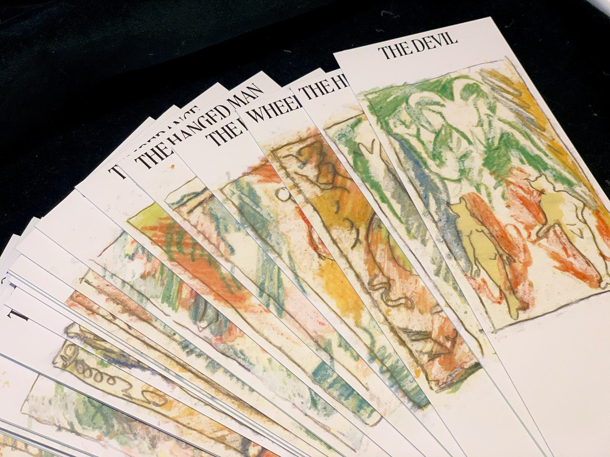

Cocktails of the Major Arcana2019
Cocktails of the Major Arcana is a collection of cocktail recipes inspired by the art of tarot.
Each hand-drawn illustration represents one character in the tarot pantheon. On the backside of each card, a curated cocktail represents the corresponding character.
Inspired by the illustrations of the Rider-Waite tarot deck.
22 cards + cover
Designed autumn 2019